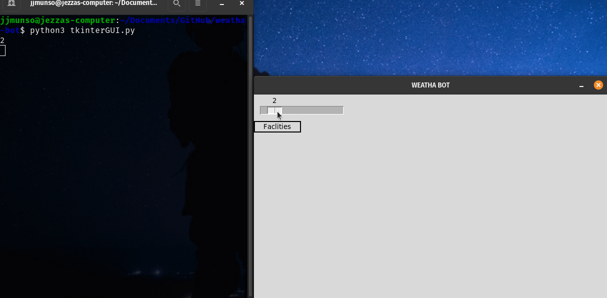
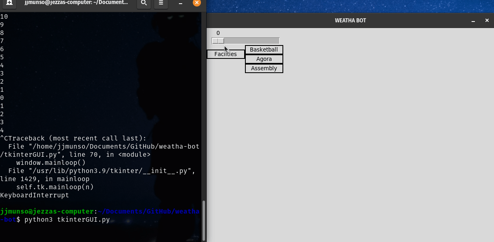

- Github created
- Basic python neural network
- Basic output test with 3 inputs 1 answer
- Returns good data with decreasing error over training iterations
- Implementation of CSV & Output File
- Empty CSV files (weatha.csv and usability.csv) added for future test data
- Basic text output file that saves the prediction to latestOutput.txt
- CSV read-and-append-to-array function (from Mr Anderson examples in T1)
Conventions for validation
CSV files need to be formatted in the following way to make them compatible with the ‘column reader’ code snippet from Unit 3 O1:| Date | Rainfall | Temp Max | Temp Min |
|---|---|---|---|
| XXX | XXX | XXX | XXX |
| XXX | XXX | XXX | XXX |
| XXX | XXX | XXX | XXX |
Sprint
Testing in the terminal outputs 0.5 consistently using 4 days of sample data on 2nd day of development. Following the agile development model means getting the core mechanics of the program working early on even if it is a makeshift and unpolished way.
- Implementation of Basic GUI with tkinter
- Merge pull request for GUI testing and Main
- Zips added to .gitignore to prevent unnessesary storage size
- Test data for past wetha and usability, added to files
- Updated gantt added to filess (development check.gan)
GUI Genesis
Using tkinter GRID system is useful for table but difficult to manage other gui elements that are loosely correlated to that grid positioning
- Implementation of Project Record and Development Diary
- Addition of Background Images
- Addition of index.html, developmentDiary.html, ganttChanges.html & stylesheet.css
- Explanatory Gifs
Webpage creation
Built a simple webpage, hosted with Github Pages, to record project progress and back it up with all other files. Allows the implementation of animated gifs to better aid record.- Development of a Weather Forecast Collection script
Development of Forecast Collection Script
Using Open Weather Map API, and python to get current weather data. Hoping to turn this into a method for collecting an up to date forecast for predictions. Using this article as a guide: Weather Forecasting with Machine LearningCurrent error getting rainfall data as the program doesn't recognise the tag 'rain'. Here is the relevant documentation for future reference: Relevant Open Weather Map API Documentation

- Various Minor Changes
- Minor Fixes to project record
- Simplification of forecast collection script
- Development Diary Additions
- Fixed API key leak
Issue 3, Mismatch heading positioning, resolved
Resolution to issue 3: Link to Github IssueMisplacement

Correct Placement

API Leak
Security leak of API fixed by removal of API key in future versions
- Added Internal Documentation
- Collation of Updated Past Weather Data (until 20/07/21)
- Tkinter GUI is broken (constant flashing)
window.update() in while True:
window.update() in print_value(), which is initated on slider move:
- Main file redone
- Data Validation existence check
- Weather collection discontinued
- French computer increased data validation requirements
- 2 Scripts Merged (index.py + tkinterGUI.py = main.py)
Main File (index.py) redone
Error appeared in the development of the main file. The error correction only occured once, meaning that _____. The program was completly re-written in hopes of solving the problemData Validation
The CSV containing data for the maximum temperature each day had empty rows. When attempting to convert these cells data (' ') from a string to a float, a type error was raised. The soultion was to ensure the table's data was valid through an existence check.if column[0] != "":
arrDatesWetha.append(column[0]) #Put the dates in this array from column 0
else:
errorMessage("ERROR: Empty Cells in table data","USUABILITY")
Automatic forecast collection discontinued
There were various problems with the weather collection API. Primarily, the API could not retrive rainfall data. This was a fatal limitation of the Open Weather API and alterntavie methods for collecting weather forecasts should be employed.Error with french computer (Data Validation)
My computer is in french. When opening the CSV in LibreOffice, it converts the file into french conventions. This is important because France uses commas (',') instead of decimal points ('.'). This causes problems with the CSV file, increasing the number of columns in rows with float values (which is essetially every row). The implementaiton of the following code, to verify that all weather data is of equal length, minimizes the chances that a faulty file starts an instance of the progam the renders the predictions innaccurate:if len(arrRainfall) == len(arrTempMax) and len(arrTempMax) == len(arrTempMin):
while i < len(arrRainfall):
day = round(float(arrRainfall[i])),round(float(arrTempMax[i])),round(float(arrTempMin[i]))
arrInside.append(day)
i=i+1
trainingData = np.array(arrInside)